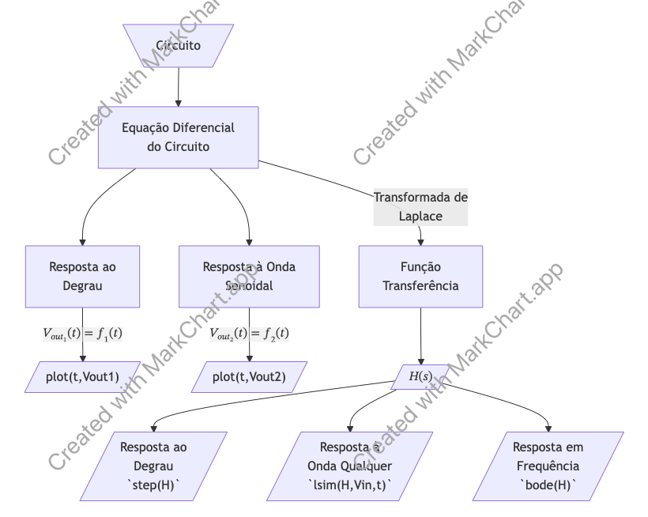

Análise de Circuito RC
Seja o seguinte circuito RC:


Suponha que se deseja realizar uma série de análises:
Simular/entender o que acontece com
(Parece uma análise DC do circuito, incluindo transitório).Obtendo função transferência do circuito
(Realizando Transformada de Laplace sobre EDO do circuito);- Simulando entrada degrau de 5 Volts usando função transferência.
(Simulação usandostep())
- Simulando entrada degrau de 5 Volts usando função transferência.
Variar R e Variar C para entender impacto na resposta temporal.
E se houvesse uma "carga" acoplada na saída
(Estudo do "efeito carregamento")E o que ocorre com
E o que acontece se este circuito for cascateado por outro circuito RC igual?
Note que a análise de um circuito pode ser feita de 2 maneiras diferentes:

Análises possíveis:
Resolvendo usando equação diferencial:
- Entrada degrau
- Significado da constante de tempo;
- Variando constante de tempo;
- Simulando entrada degrau;
- Simulando entrada senoidal;
- Entrada degrau
- Diferentes simulações;
- Simulando entrada degrau;
- Simulando entrada senoidal;
- Variando R;
- Variando C;
- Variando a frequência da senóide;
- Resposta em Frequência: aqui e aqui.
Fernando Passold, em 17/08/2026